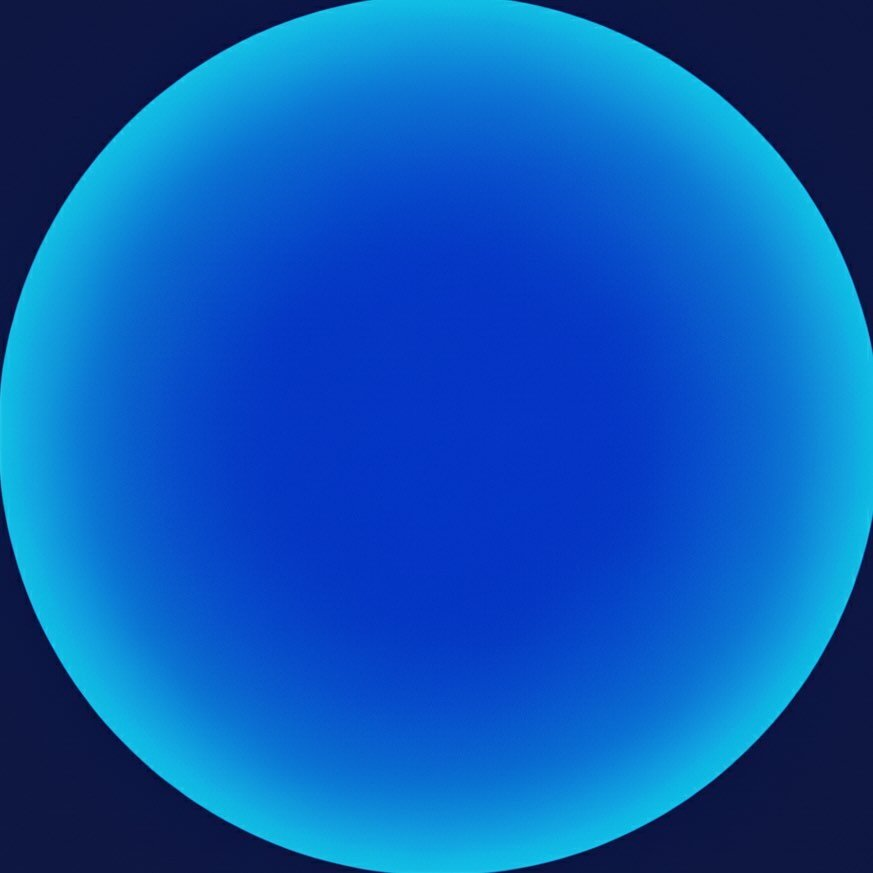

The AI accountability agent for CS students grinding for internships. On Telegram. Always watching.
Start grinding → Free 7-day trial. Cancel anytime.It asks if you've done your two LeetCode problems today. It remembers you said you wanted Goldman. It nudges you at 8pm when you go quiet. It logs every application you mention. It's the senior dev you wish you had on speed dial.